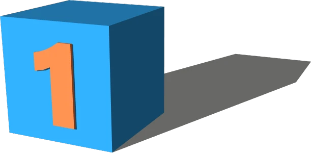
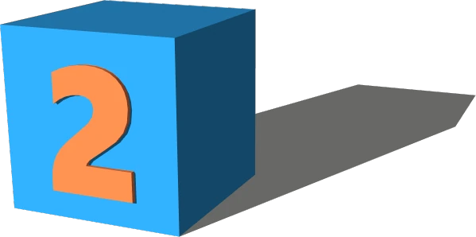
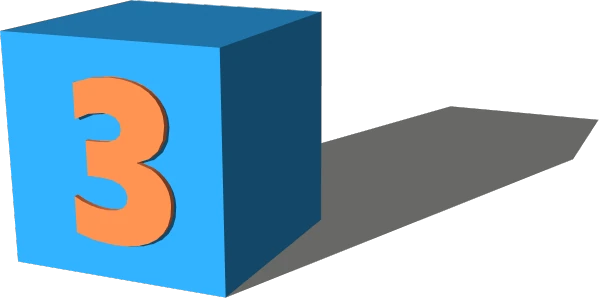
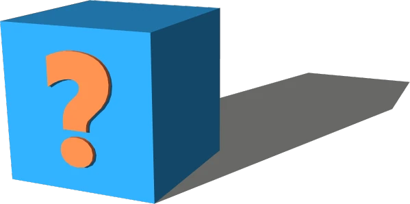

DynamicBits — Smart, Modular SketchUp Components
Build faster. Model cleaner. Request the components you need.
A growing library of parametric SketchUp components — free to request, customizable to your workflow, and built with the community.Build faster. Model cleaner. Request the components you need.
A growing library of parametric SketchUp components — free to request, customizable to your workflow, and built with the community. |
Choose your tier Free community components, private builds, or premium build‑along tutorials. |
 |
Submit your request Tell us what you need — a wall, a window, a cabinet, a full system. |
 |
Receive your component Delivered as a clean, parametric SketchUp component ready to drop into your model. |
Whether you're a designer, contractor, or curious creator — dynamic components can save you time, reduce errors, and make your SketchUp workflow way more awesome. Choose your tier, submit a request, and let's build something cool together.

A component built from community requests.
Best for Hobbyists, learners, SketchUp fans
Free, but buy me a coffee if you like it!

Custom component, yours to keep, at a price.
Great for studios and SMEs.

Get the component + a full build-along tutorial at an additional cost.
For anyone, but especially Educators, teams, advanced users.
A note from the creatorHi — I’m the founder of Worqbox, and DynamicBits is something I’ve wanted for years: a clean, modern library of SketchUp components that behave the way you wish they did. No plugins. DynamicBits is community‑driven — your ideas shape what gets built next. |
 |
What’s coming nextWe plan to grow DynamicBits fast. Upcoming Smart Bits include:
|
Built by an experienced SketchUp designer, educator and workflow designer.
Transparent development process
Clear, predictable component behaviour
No hidden costs or subscriptions
Community requests are genuinely considered
Components are tested before release
A free, growing library of smart SketchUp components
A way to request new components
Paid private builds for studios and professionals
Premium build‑along tutorials for those who want to learn the craft
A community‑driven roadmap
A fun, collectible “Smart Bits” card system for each component